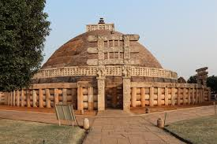
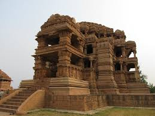
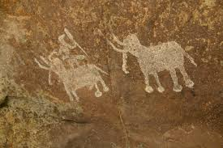
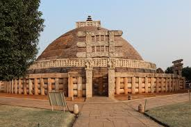
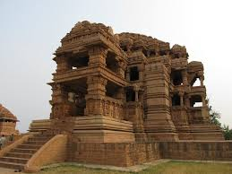
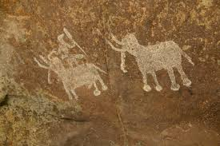

The city of Ujjain arose as a major center in the second wave of Indian urbanization in the sixth century BC, and served as the chief city of the kingdom of Malwa or Avanti. Further east, the kingdom of Chedi lie in Bundelkhand. Chandragupta Maurya united northern India c. 322 BCE, establishing the Maurya Empire (322 to 185 BCE), which included all of modern-day Madhya Pradesh. King Ashoka's wife was said to come from Vidisha- a town north of today's Bhopal. The Maurya Empire went into decline after the death of Ashoka, and Central India was contested among the Sakas, Kushanas, and local dynasties during the 3rd to 1st centuries BCE. Ujjain emerged as the predominant commercial center of western India from the first century BCE, located on the trade routes between the Ganges plain and India's Arabian Sea ports. It was also an important Hindu and Buddhist center. The Satavahana dynasty of the northern Deccan and the Saka dynasty of the Western Satraps fought for the control of Madhya Pradesh during the 1st to 3rd centuries CE. The south Indian king Gautamiputra Satakarni of the Satavahana dynasty inflicted a crushing defeat upon the saka rulers and conquered parts of Malwa and Gujarat in the 2nd century CE. Northern India was conquered by the Gupta empire in the 4th and 5th centuries, which was India's "classical age". The Vakataka dynasty were the southern neighbors of the Guptas, ruling the northern Deccan plateau from the Arabian Sea to the Bay of Bengal. These empires collapsed towards the end of the 5th century.
The attacks of the Hephthalites or White Huns brought about the collapse of the Gupta empire, and India broke up into smaller states. A king Yasodharman of Malwa defeated the Huns in 528, ending their expansion. King Harsha of Thanesar reunited northern India for a few decades before his death in 647. Malwa was ruled by the South Indian Rashtrakuta Dynasty from the late 8th century to the 10th century.[2] The Medieval period saw the rise of the Rajput clans, including the Paramaras of Malwa and the Chandelas of Bundelkhand. The Paramara king Bhoj (c. 1010�1060) was a brilliant polymath and prolific writer. The Chandelas created the temple city of Khajuraho between c. 950 and c. 1050. Gond kingdoms emerged in Gondwana and Mahakoshal. Northern Madhya Pradesh was conquered by the Turkic Delhi Sultanate in the 13th century. After the collapse of the Delhi Sultanate at the end of the 14th century, independent regional kingdoms reemerged, including the Tomara Rajput kingdom of Gwalior and the Muslim Sultanate of Malwa, with its capital at Mandu. The Malwa Sultanate was conquered by the Sultanate of Gujarat in 1531.
Most of Madhya Pradesh came under Mughal rule during the reign of the emperor Akbar (1556�1605). Gondwana and Mahakoshal remained under the control of Gond kings, who acknowledged Mughal supremacy but enjoyed virtual autonomy. After the death of the Mughal emperor Aurangzeb in 1707 Mughal control began to weaken, and the Marathas began to expand from their base in central Maharashtra. Between 1720 and 1760 the Marathas took control of most of Madhya Pradesh, and Maratha clans were established semi-autonomous states under the nominal control of the Maratha Peshwa. The Holkars of Indore ruled much of Malwa, and the Bhonsles of Nagpur dominated Mahakoshal and Gondwana as well as Vidarbha in Maharashtra. Jhansi was founded by a Maratha general. Bhopal was ruled by a Muslim dynasty descended from the Afghan General Dost Mohammed Khan. Maratha expansion was checked at the Third Battle of Panipat in 1761. The British were expanding their Indian dominions from bases in Bengal, Bombay, and Madras, and the three Anglo-Maratha Wars were fought between 1775 and 1818. The Third Anglo-Maratha War left the British supreme in India. Most of Madhya Pradesh, including the large states of Indore, Bhopal, Nagpur, Rewa, and dozens of smaller states, became princely states of British India, and the Mahakoshal region became a British province, the Saugor and Nerbudda Territories. In 1853 the British annexed the state of Nagpur, which included southeastern Madhya Pradesh, eastern Maharashtra and most of Chhattisgarh, which were combined with the Saugor and Nerbudda Territories to form the Central Provinces in 1861. The princely states of northern Madhya Pradesh were governed by the Central India Agency.